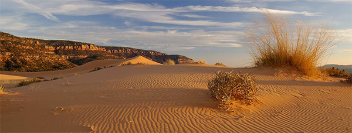
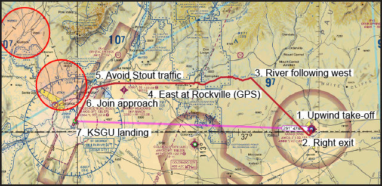

Sly Llama, July 2020

Image from the Utah.com travel site.
If there is any interest, I would be very keen to do a simulated flight tour for Baroovians, from Kanab Municipal Airport, west across the Coral Pink Sand Dunes State Park, over to St. George Regional Airport. Most of the work that I’ve done today – and still have yet to do – centers around this aim and these following points!
I’ve found official FAA VFR charts here – we want Las Vegas charts for our flight. Don’t open the link in-browser as the PDFs are around 100 – 150MB, and Firefox struggles to load these. Instead, use wget. Alternatively, SkyVector charts are also available. Some notes:
I’ve been working off this CheckMate version here. It's for a G1000-fitted panel (so it has some redundant instructions like “PFD – Verify On”), but all of the engine procedures, operating speeds, and so on seem just fine.
We now have a provisional tour route that takes us up west over the Corals, over the river, and down south to line up with the approach into KSGU:

Care needs to be taken to avoid that fire-restricted NOTAM on the left. I’ve found some photo-real textures for UTAH here (they're about 40GB, though)…